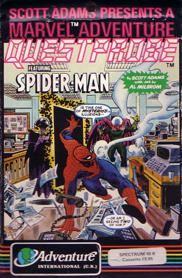
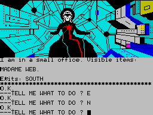

Spider-Man


{kind=link}

| Publisher: | Adventure International |
| Price: | £9.95 |
| Year: | 1984 |
| Source: | CRASH, Issue 14 |

Spider-man follows The Hulk as the second instalment in the Questprobe link-up between Marvel Comics and Scott Adams marketed in the UK by Adventure International. In keeping with the theme, the background to the adventure and the loading instructions are contained within a comic which features a long comic strip episode entitled ‘Mysterio times two!’. In it we learn how Peter Parker, a freelance photographer at the Daily Bugle in New York, dons a spider suit and uses his powers of spider-sense (which warns him of impending danger) and icky-sticky spider webbing to become Spider-man, a character often swinging spectacularly about skyscrapers in his never-ending fight against crime.
His assailant in this episode is the former Hollywood special effects designer Quentin Beck, otherwise known as Mysterio. He wields his power of hypnosis and illusion from behind a fishbowl helmet supplied with oxygen to isolate him from the thick gas emitted from his canisters which obscure Spider-man’s vision and spider senses. We can learn more of Spider-man’s friends and foes in a glossary of Marvel characters in the back of the comic. Details go as far as personal attributes such as Mysterio’s five feet and eleven inches height, 175lbs weight, blue eyes and black hair.

Two unusual objects, and one imposing character dominate the storyline. The objects are a matter energy egg and the other a bio-gem. The bio-gem is one of many such fragments each protected by an egg. Should the gem try to break free, or anyone be foolish enough to move it before neutralising its energy, the egg explodes. The dominant character is the Chief Examiner, familiar to those who have played The Hulk. At first Spider-man confuses the Examiner with Mysterio and hence the title ‘Mysterio times two’, but later realises, when he passes through the dark void of the Examiner’s portal, that he represents a great power which oversees all the Marvel superheroes. It is here that Spider-man has his mind stripped of everything he knows, every experience, every thought, every sensation he has ever had is laid bare to the probing portal. To find out what goes on in the portal we are directed to the adventure program.
Following the comic strip, and after a brief introduction to what adventures entail the comic goes on to give examples of valid sentence structures e.g. TAKE GEM FROM THE AQUARIUM and TALK TO MADAME WEB along with the extremely useful (especially early on) TAKE EVERYTHING and DROP ALL. Continuing in this helpful mode a list of 24 useful words are provided.
If you are over the tender years of fourteen or so, and you are wondering why you should engross yourself in the antics of a cartoon superhero then perhaps it’s worth noting that these comic strips can be, in a self-deprecating fashion, genuinely amusing, much as the classic Batman TV Series. Spider-man, for example, must swing about the skyscrapers on a sultry summer’s evening to keep cool wondering what sort of society has glamorous hero-types unable to afford an air conditioner. His finances are low because his editor at the newspaper wants something a little more than just shots of Spider-man in action (how exactly Spider-man can take pictures of himself is not explained).
The crux of the adventure is how you go about dealing with Spider-man’s friends and foes from Madame Web, a friend with useful psychic powers, to the likes of Sand-man, who can convert all or part of his body to sand, and the Ringmaster, another foe, who runs a circus of crime, hypnotising and robbing his audiences. Although the solution to the encounters with these characters can be gleaned from the information in the glossary, there are still one or two places which left me puzzled. Moving a crib is apparently beyond the powers of a superhero like Spider-man; there are one or two locations which lead to an abrupt ‘something stops me’ but I never quite worked out what, and, despite keen super senses, in the dark our hero falls and breaks his neck. There is one major programming niggle which you will most certainly come across. On picking up an object, or setting one down, the scene is taken from the screen momentarily and then redrawn so quickly it results in an awkward flash. Picking up several items quickly can leave you dazed by all the flashing. This is simply poor programming.
Spider-man is another good game from Scott Adams where the Marvel characters really give the game that edge. The graphics are superlative and capture the scenes right down to the smallest detail. The mix of comic book hero, fascinating plot and super graphics will ensure the game’s success.
COMMENTS
| Difficulty: | Quite difficult |
| Graphics: | In all locations, some repeated, generally excellent |
| Presentation: | Average |
| Input facility: | Accepts reasonably complex sentences |
| Response: | Fast |
| General rating: | Very good |
| Atmosphere: | 8 |
| Vocabulary: | 8 |
| Logic: | 8 |
| Debugging: | 9 |
| Overall: | 8 |